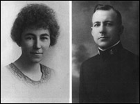
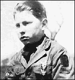

PART TWO:
BEFORE DIANETICS 1911-1949
Appoint Amongst you
Some small few
To tell about me lies
And invent wicked Things
And spread out infamy
Abroad and Within
And to stand before
Our altars
And insult and
Lie and tell
Evil rumors about us all.
L. RON HUBBARD, Hymn
of Asia
CHAPTER ONE
Hubbard's Beginnings
To be free, a man must be honest with himself
and with his fellows.
L. RON HUBBARD,
"Honest People Have Rights Too"
Novelists often elaborate their own mundane experience
into fictional adventures. Hubbard did not confine his creativity to his fictional work.
He reconstructed his entire past, exaggerating his background to fashion a hero, a
superhero even. Although Hubbard wrote many imaginative stories, his own past became his
most elaborate work of fiction.
Hubbard's works are peppered with references to his
achievements. He often broke off when lecturing to relate an anecdote about his wartime
experience or his Hollywood career. Even before he generated a following he would tell
tall stories to anyone who cared to listen. He stretched his tales to the ridiculous,
claiming he broke broncos at the age of three and a half, for example. Most Scientologists
believe these tales. Few have bothered to compare the anecdotes or the many and varied
biographical sketches published by Hubbard's Church, so the many discrepancies pass
largely unnoticed. The pattern of Hubbard's reconstructed past is the translation of the
actual, sometimes mediocre, sometimes sordid, reality into a stirring tale of heroic
deeds.
Even critics of Scientology occasionally swallow part
of the myth. Paulette Cooper, in her penetrating exposé of Scientology, assured her
readers, quite erroneously, that Hubbard was "severely injured in the war... and in
fact was in a lifeboat for many days, badly injuring his body and his eyes in the hot
Pacific sun."
But Hubbard's accounts are not the only source of
information. By the summer of 1984, the fabric of his heroic career had been badly torn,
largely through the work of two men: Michael Shannon and Gerald Armstrong.
In July 1975, on a muggy evening in Portland, Oregon,
Michael Shannon stood waiting for a bus. A young man approached him, and asked if he
wanted to attend a free lecture. Shannon went along, thinking that at least the lecture
room would be air-conditioned (it was not). He listened to a short, plausible talk about
"Affinity, Reality and Communication," and after a brief sales pitch signed up
for the "Communication Course."
Many Scientologists' stories begin this way. Shannon's
soon took a different turn. The next day he decided he did not want to do the
Communication Course and, after a "brief but rather heated discussion," managed
to get his money back. He kept and read the copy of Dianetics: The Modern Science of
Mental Health which kindled his curiosity, not for Dianetics, but for its originator.
I started buying books. Lots of books. There
was a second hand bookstore a few blocks away and they were cheaper, and I discovered they
had books by other writers that were about Scientology - I happened on the hard-to-find Scandal
of Scientology by Paulette Cooper. Now I was fascinated, and started collecting
everything I could get my eager hands on - magazine articles, newspaper clippings,
government files, anything.
By 1979, Shannon had spent $4,000 on his project and
had collected "a mountain of material which included some files that no one else had
bothered to get copies of - for example, the log books of the Navy ships that Hubbard had
served on, and his father's Navy service file." Shannon intended to write an exposé
of Hubbard.
After failing to find a publisher, Shannon sent the
most significant material to a few concerned individuals and ducked out of sight, fearful
of reprisals. Five years later, he was still in hiding and my efforts to contact him
failed. The hundred pages Shannon sent out included copies of some of Hubbard's naval and
college records, as well as responses to Shannon's many letters inquiring into Hubbard's
expeditions and other alleged exploits.
The "Shannon documents" also found their way
to Gerald Armstrong. Armstrong had been a dedicated Sea Org member for nearly ten years
when he began a "biography project" authorized by Hubbard. Much of the immense
archive collected by Armstrong consisted of Hubbard's own papers, not the forgeries that
Hubbard claimed had been created by government agencies to discredit Scientology. The
archive largely confirmed Shannon's material. Armstrong and Shannon reached the same
eventual destination from opposed starting points.
To complete the picture has taken a great deal more
research, but the foundations were well laid by Armstrong and Shannon. Let us compare
Scientology's changing versions of the life of L. Ron Hubbard with the truth.
There is some agreement between all concerned
on at least one fact: Lafayette Ronald Hubbard was born in Tilden, Nebraska, on March 13,
1911; despite one of his later claims, it was not Friday the 13th. 1
His Birth Certificate also shows that Ron was born in
Dr. Campbell's Hospital on Oak Street with S.A. Campbell "in attendance."
 His mother, Ledora May Hubbard (left in photo), had
returned to the town of her birth to bring her son into the world. His father was Harry
Ross Hubbard (right in photo). Although Ron boasted about his paternal ancestry,
the famous Hubbard name, in fact, Harry Hubbard had been an orphan and was born Henry
August Wilson. L. Ron had not a drop of Hubbard blood in him. 2
Ron claimed that he was born the son of a U.S. Navy
Commander. Harry Hubbard had served a four year stint in the Navy as an enlisted man until
1908. He re-enlisted when America entered World War I, when his son was six. Harry Hubbard
eventually did become a Lieutenant Commander, but not until 1934. From this point, the
Scientology accounts of Hubbard's life are usually at variance with the facts and often at
variance with one another. We are told that when Ron was six months old (or three weeks,
in another Hubbard account) 3 his family moved to Oklahoma. In fact, the first account is
nearly accurate: the Hubbard family spent the Christmas season in Oklahoma, with Ron's
maternal grandparents, then moved on to Kalispell, Montana. 4
Before he was a year old, one Scientology version
continues, Hubbard was sent to his maternal grandparents, the Waterburys, because his
"father's career kept the family on the move." His grandparents owned an
enormous cattle ranch, "one quarter of Montana." Shannon found no record of the
Waterbury ranch, because he looked for it in Helena. But Ron's grandfather did briefly own
320 acres (a half-section) west of Kalispell, where he pastured horses. 5 Montana amounts to 94 million acres.
Ron supposedly learned to ride before he could walk
and was breaking "broncos" at the age of three and a half, at which age he could
also read and write. He became a bloodbrother of the Blackfoot Indians in 1915 (aged four
at most) and remained with his grandparents, the Waterburys, until he was ten. Hubbard
described his early years thus: "Until I was ten, I lived the hard life of the West,
in a land of 40-degree-below blizzards and vast spaces."
The City Directories published in many U.S. towns
listed the inhabitants, their jobs, addresses, and the value of their taxable assets. In
the 1913 Kalispell Directory, Lafayette Waterbury was assessed at $1,550. He was
comfortable, but by no means rich.
In truth, when Ron's grandfather moved to Kalispell
and bought his half-section, he continued to earn his living as a veterinarian. By 1917,
he was living in Helena, running the Capital City Coal Company. Ron's father, Harry, had
left his job on a Kalispell newspaper to become manager of the Family Theater in Helena,
Montana, in 1913. Between 1913 and 1916 he was working as a book-keeper at the Ives Smith
Coal and Cattle Company. The next year, when Ron was six, Harry was working at the same
place as a wagon-driver. Harry Hubbard helped his father-in-law set up the Capital City
Coal Company before re-enlisting in the U.S. Navy on October 10, 1917, where he remained
until his retirement in 1946. Ron's mother did clerical work for government agencies.
There is actually no way of checking whether Ron, or
anyone else, became a "bloodbrother" of the Blackfeet in 1915. There are no
records. It seems unlikely, as the Piegan reservation was over sixty miles from the
Waterbury half-section, and over 100 from Helena, where Ron was living with his parents in
1915. A Scientologist eighth-blood Blackfoot, having failed to find any record, recently
admitted Hubbard without the Blackfoot nation's approval. In the 1930s Hubbard admitted
that what he knew of the Blackfeet came second hand from someone who really had been a
bloodbrother.
Hubbard was certainly an enthralling story-teller. He
once told an audience that when he was six, his neighborhood was terrorized by a
twelve-year-old bully called Leon Brown, and by "the five O'Connell kids," aged
from seven to fifteen. Ron learned "lumberjack fighting" from his grandfather,
and took on the two youngest O'Connell kids one after the other. The O'Connell kids
"fled each time I showed up . . . Then one day I got up on a nine foot high board
fence and waited until the twelve-year-old bully passed by and leaped off on him boots and
all and after the dust settled that neighborhood was safe for every kid in it." 6
Shannon located school registration cards for five
Helena boys called O'Connell. When Ron was six, the oldest O'Connell boy was sixteen, and
the youngest five. Shannon did not find Leon Brown, but he did exist, living a few doors
away from Ron, and he was twelve in 1917. Ron Hubbard must have been a very tough
six-year-old!
Ron's grandfather's coal company in Helena had failed
by 1925, and the Helena City Directory listed him as the owner of an automobile spare
parts business. By 1929, Waterbury had returned to veterinary work. He died two years
later, still at 736 Fifth Avenue, Helena. His obituary made no mention of his having been
a rancher.
Ron Hubbard claimed he had been raised by his maternal
grandparents. In fact, he was with both of his parents until his father rejoined the Navy,
in 1917. Even then his mother stayed put with her family until 1923, when she joined her
husband, taking Ron with her. Ron was part of a tolerant and joyful family community.
The young Hubbard probably spent a few weeks on his
grandfather's small stud farm. To a three-year-old boy those 320 acres near Kalispell
probably seemed like a quarter of Montana. He undoubtedly met cowboys, and perhaps even
Blackfoot Indians (possibly on the rail journey from Helena to Kalispell). There is
nothing wrong with any of this, except, from Hubbard's point of view, the scale. It was
all far too small. To be revered as the most amazing man who had ever drawn breath,
Hubbard would have to do far better.
Hubbard claimed that his interest in the human mind
was sparked by a meeting with one Commander Thompson when Hubbard was twelve. According to
Hubbard, they met during a trip through the Panama Canal en route to Washington, DC.
Thompson was a Navy doctor, with an abiding interest in psychoanalysis, supposedly "a
personal student of Sigmund Freud." From Thompson, Hubbard "received an
extensive education in the field of the human mind." In a 1953 publication Hubbard
claimed that his "research" began when he met Thompson. 7 The claim has the romantic ring of Hubbard's pulp fiction.
Commander "Snake" or "Crazy"
Thompson (as Hubbard called him) is something of an enigma. Neither Shannon nor Armstrong
discovered anything about him. During the Armstrong case in 1984, Scientology Archivist
Vaughn Young at least proved "Snake" Thompson's existence. Young had spoken to
Thompson's daughter, who attested her father's love of snakes. A library catalogue listing
several papers by Thompson on the subjects both of snakes and the human mind, and a
postcard from Freud to Thompson were produced. His death certificate showed that he had
indeed been a Commander in the U.S. Navy.
For Scientology Archivist Young, an educated man with
a master's degree in Philosophy, Thompson's existence, evidence of his nickname, and a
postcard were sufficient proof of Hubbard's claims to have been tutored in the Freudian
mysteries by this Navy doctor, at the age of twelve. Hubbard's extensive teenage diaries
make no mention of either Thompson or Freud. Nor do they contain any material which
supports the idea that the juvenile Hubbard was "researching" the human mind.
Scientologists claim Ron became the youngest Eagle
Scout in America at the age of twelve, in Washington, DC, and that he was a "close
friend of President Coolidge's son, Calvin Jr., whose early death accelerated L. Ron
Hubbard's precocious interest in the mind and spirit of Man."
 In a diary, written when he was about nineteen, Hubbard recalled his
acquisition of the Boy Scout Eagle. A photograph taken at the time (right) shows
Hubbard in uniform, all freckles and acne, with the twenty-one necessary merit badges
stitched on to a sash. There is no way of knowing whether he was the youngest
Eagle Scout in America. The Boy Scouts place no value on the age at which a boy becomes an
Eagle Scout, and have never kept a record, nor was there any way that Hubbard could find
out. But the Boy Scouts do have a record of a Ronald Hubbard who became an Eagle Scout in
Washington DC, and was a member of Troop 10. The Eagle was actually awarded on March 28,
1924, some two weeks after L. Ron Hubbard's thirteenth birthday.
In the same diary, Hubbard recollected a meeting with
President Coolidge. He was one of some forty boys. The meeting consisted of Hubbard
telling his name to the President and a handshake. Rank Pathé took newsreel film of the
boys. 8 Out of this meeting blossomed the supposed close relationship
with Coolidge's son, Cal Jr., whose early death was to spur Hubbard's
"research." The relationship existed only in Hubbard's mind, which is confirmed
by comparing Cal Jr.'s movements to Hubbard's. Moreover, there is no mention of Cal Jr. in
Ron's teenage diaries. In March 1924, a few days after Ron shook the President's hand, the
Hubbard family left Washington, DC., moving across the country to the state of Washington.
FOOTNOTES
Quotations from and reference to Hubbard and
Scientology biographical sketches of Hubbard: Mission into Time (Hubbard, 1973)
pp.4-5; A Brief Biography of L. Ron Hubbard (Scientology Public Relations Office
News, Los Angeles 1960); Flag Divisional Directive 69RA, ""Facts About L. Ron
Hubbard Things You Should Know," 8 March 1974, revised 7 April 1974; Hubbard, Story
of Dianetics and Scientology (taped lecture of 1958); Hubbard, Dianetics Today
p.989. (CSC Publications Organization, 1970)
Shannon story and quotations from four page
article, "A Biography of L. Ron Hubbard" by Michael Linn Shannon.
1. Exhibit 63, Church of
Scientology of California vs. Gerald Armstrong, Superior Court for the County of Los
Angeles, case no. C 420153, p.24.
2. Affidavit sworn by H. R.
Hubbard's true brother, J. R. Wilson, 13 September 1920. Harry Hubbard naval record.
3. Adventure, 1935.
4. Russell Miller interview
with Margaret Roberts, Helena, April 1986.
5. Land transfers.
6. Volunteer Minister's
Handbook, p.284 (CSC Publications Organization, Los Angeles, 1974)
7. The Factors, Scientology
8-8008 (Hubbard, 1967).
8. Exhibit 63, Church of
Scientology of California vs. Gerald Armstrong, Superior Court for the County of Los
Angeles, case no. C 420153 |